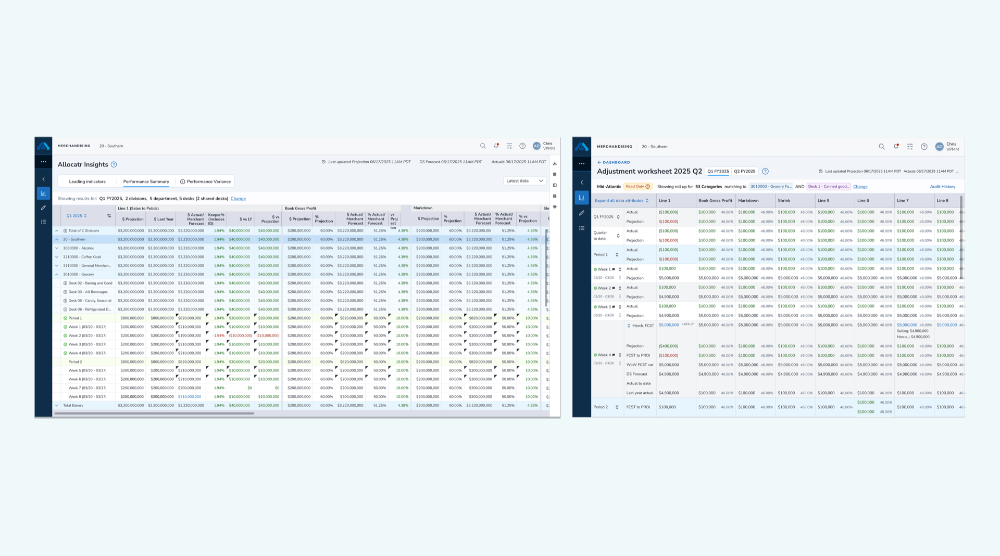
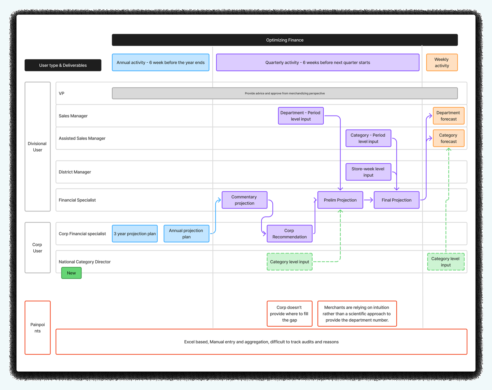
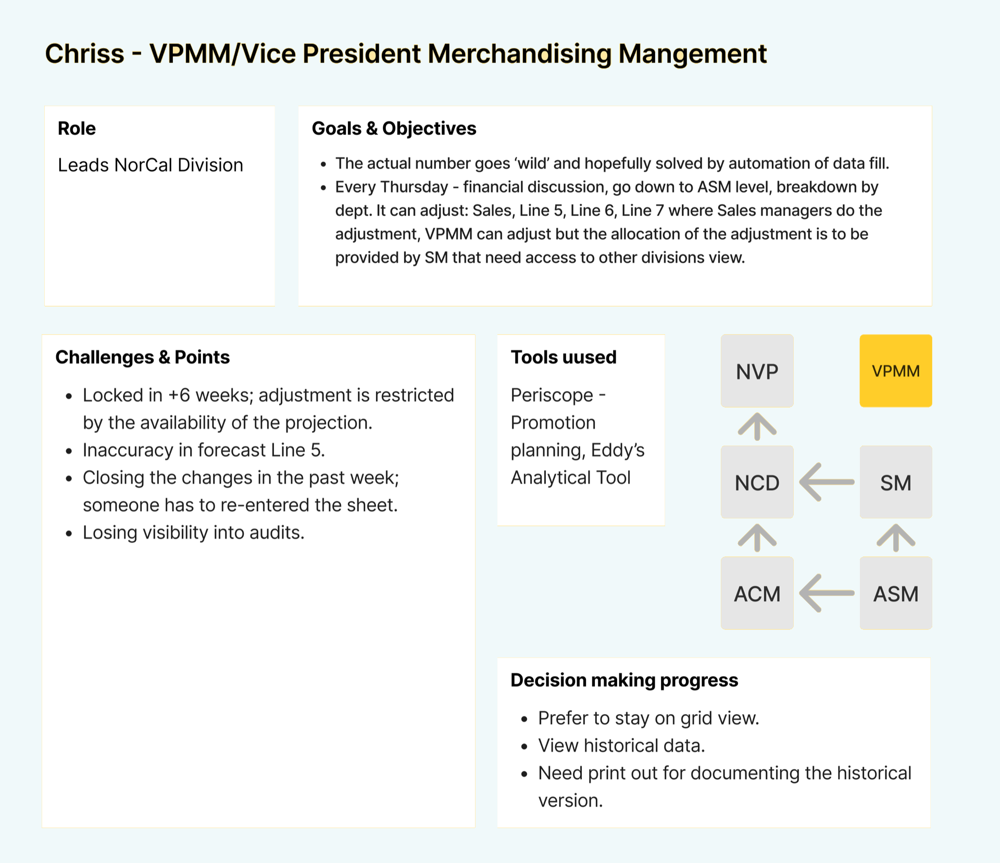
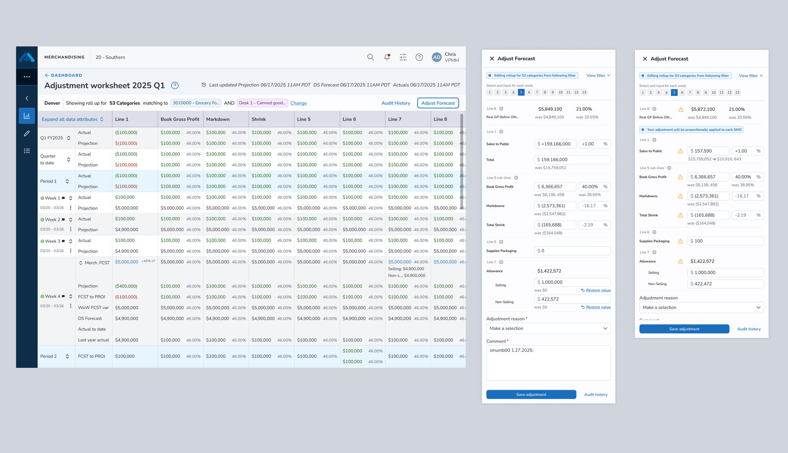

From Excel to forecast planning in real time
TL;DR Summary
Led UX strategy for an AI-powered forecasting platform replacing manual Excel workflows across Albertsons' merchant and finance teams. I partnered with a global engineering team, product partners and business partners based in the US to deliver this project.

Result
Quantifiable improvements across planning efficiency, data visibility, accountability, and digital transformation of manual workflows.
24%
Faster planning cycles
50%
Manual workflows replaced
38%
More adjustments tracked
42%
Better metric visibility
Business Challenge
Merchant and financial teams printed forecast documents weekly, with teams constantly communicating back and forth. Managing adjustments in offline Excel sheets lacked audit trails, causing teams to lose track of adjustments and undermining data accuracy.
The Core Question: How might we empower Category Managers and Finance teams to harness reporting and business intelligence for strategic category growth?
- No audit trail exists for forecast adjustments, leading to accountability gaps.
- Projections based on intuition lack scientific guidance from corporate finance.
- Manual data re-entry causes version control issues and lost visibility.
User Research
Through design workshops with merchants, finance teams, and leadership, we mapped the intricate approval hierarchy and identified critical friction points in forecast management.
- Design Workshop: Collaborative sessions to understand users, processes, and identify product opportunities.
- Journey Mapping: Mapped existing workflows to identify gaps between reporting and forecast visualization.
- Key Insights: Discovered adjustment flow from ASM → SM through VPMM → NM → NVPMM hierarchy.
Adjustment flow from ASM → SM with performance rolling up through VPMM → NM → NVPMM required flexible design for multiple approval paths across the organizational hierarchy.
- Dependency on Excel: Teams relied on offline Excel sheets for forecast adjustments, creating version control nightmares and no source of truth.
- Approval paths with multiple layers: Approval spanning multiple layers across divisions required flexible design that could accommodate different organizational structures.
- Missing Accountability: No mechanism existed to capture reasons behind forecast adjustments, making it impossible to learn from past decisions.
- Gap Between Reporting and Visualization: Disconnection between reporting data and forecast visualization forced teams to manually bridge insights across tools.


Design Strategy
Established a strategic approach focusing on interfaces familiar to Excel users, while introducing audit trails, validation in real time, and collaboration across functions.
Dashboard: Data visualization with insights available to view only, enabling quick decisions across all hierarchy levels.
Worksheet: Editable forecast adjustments with full audit history and reasoning capture per line item.
Familiarity: A format styled like Excel based on user feedback, maintaining comfort while following UDS guidelines.
Strategic Decisions
- Retained a format styled like Excel based on user feedback while following UDS Design guidelines.
- Created a system with two tables: a Dashboard viewable only by leadership, and an editable Worksheet with a full audit trail for operators.
- Explored budget allocation powered by AI, using historical trends, for future implementation.
Design Decisions
3 decisions that shaped the outcome, covering key tradeoffs made during the design process: where I went, what I considered, and why it worked.
01 · Familiarity vs. Modernity
Native data platform UI vs. an interface styled like Excel. I considered building a modern data dashboard following UDS design guidelines without Excel conventions, but chose a grid interface styled like Excel, built with UDS core components.
Teams had used Excel for forecast adjustments for years. Switching to a foreign UI would have created resistance and a steep adoption curve. By matching the mental model they already trusted, while adding audit trails, inline reasoning capture, and approval flows that Excel could never offer, we got adoption without a behavioral change battle.
Tradeoff: this required building a table component styled like Excel that had never existed before within the UDS ecosystem. I designed hybrid components tailored to forecasting needs with AI assistance, which became reusable across the APP ecosystem.
Signal it worked: 50% of manual workflows replaced; planning cycle time reduced by 24%.
02 · Permissions Architecture
Single worksheet view vs. dual Dashboard + Worksheet system. I considered one editable interface accessible to all roles, but chose a system with two tables instead: a Dashboard viewable only by leadership, and an editable Worksheet with a full audit trail for operators.
The approval hierarchy (ASM → SM → VPMM → NM → NVPMM) meant that giving edit access to all roles created accountability gaps and version conflicts. Leadership needed to trust the numbers they were looking at; operators needed freedom to adjust with context. Separating these surfaces eliminated both problems.
Tradeoff: two surfaces to maintain, and a risk of data drift between dashboard and worksheet views. This was solved with synchronization in real time and clear timestamps on every adjustment.
Signal it worked: capturing reasons increased by 38%, directly addressing the accountability gap that motivated the project.
03 · AI Scope
Forecasts generated by AI vs. AI as decision support. I considered using AI to automatically generate forecast allocations, replacing manual adjustment entirely, but chose AI as a suggestion layer that surfaces historical trends and predicted adjustment reasons, with humans making the final call.
Finance and merchant teams had deep institutional knowledge about seasonal patterns, promotions, and vendor relationships that a model couldn't capture in v1. Removing human judgment would have killed trust in the tool. Positioning AI as a trusted collaborator, one that says "here's what history suggests, you decide," matched how these users already thought about their work.
Tradeoff: slower ROI on AI investment in the short term, offset by higher adoption confidence and a clear roadmap to increase AI autonomy as the model proves itself over time.
Signal it worked: explored in vision workshops and positioned for future implementation with organizational buy-in already secured.
Solution Overview
Designed an integrated dashboard and worksheet system addressing transparency, accountability, and future optimization powered by AI.
- Information Architecture (Dashboard): Hierarchical view from Quarter to Desk level with timestamp tracking, action bar, and advanced filtering by timeframe, division, department, and desk.
- Forecast Management (Worksheet): Adjustment drawer for line item updates with alerts, reason selection, and comments. Forecast adjustments span multiple lines with full audit history.
- Accountability & Transparency (Audit Trail): Comprehensive audit history capturing all divisional changes, clearly highlighting which desks are impacted and which are not, by department.
- Future State Innovation (AI Exploration): An aggregator powered by AI for automatic budget allocation, using historical trends and predicting adjustment reasons from market data.

Allocatr Insights dashboard and adjustment worksheet for forecast planning
Budget allocation powered by AI, with trend prediction exploration
Impact
Quantifiable improvements across planning efficiency, data visibility, accountability, and digital transformation of manual workflows.
- Design System Impact: Created a table styled like Excel, the first of its kind within the APP ecosystem, using core UDS components. Developed hybrid components tailored to business needs with AI assistance.
- Process Innovation: Balanced business requirements with user experience. Empowered the offshore engineering team with autonomy while maintaining quality through design audits.